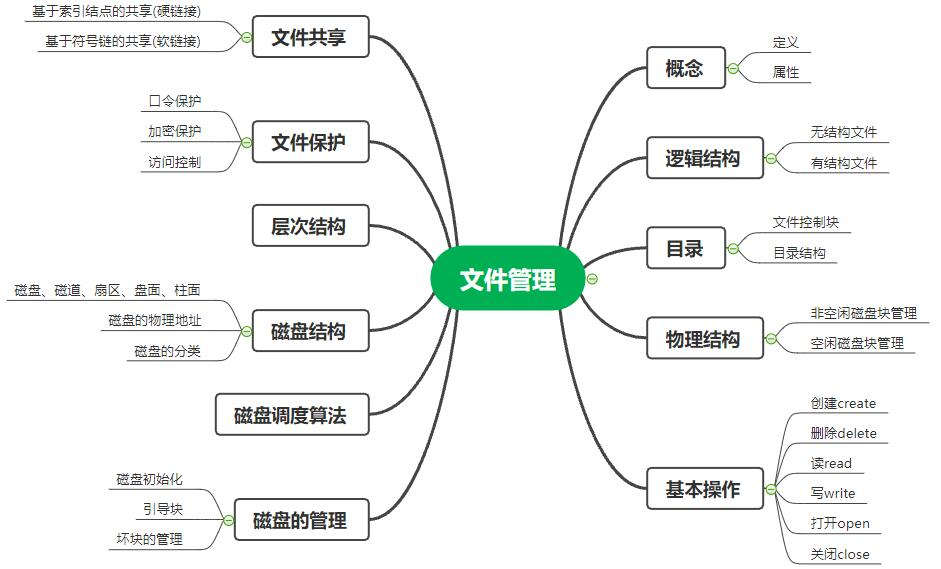
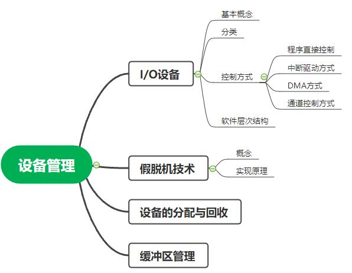

第一章：绪论
- 数据库
-
数据库中的数据按一定的数据模型组织、描述和存储，具有较小的冗余度、较高的数据独立性和易扩展性，并可为各种用户共享
-
数据库管理系统的功能：数据定义功能，数据组织、存储和管理，数据操纵功能，数据库的事务管理和运行管理，数据库的建立和维护功能，其他功能
-
数据库系统：由数据库、数据库管理系统（及其应用开发工具）、应用程序和数据库管理员组成的存储、管理、处理和维护数据的系统
- 数据模型
-
数据库中用来实现对现实世界进行抽象的工具
-
数据模型包括
-
数据结构：描述数据库的组成对象以及对象之间的联系
-
数据操作：对数据库中各种对象的实例允许执行的操作的集合，包括操作及有关的操作规则
-
数据的完整性约束条件：一组完整性规则
- 数据独立性
-
包括
-
物理独立性：用户的应用程序与数据库中数据的物理存储结构是相互独立的
-
逻辑独立性：用户的应用程序与数据库中数据的逻辑结构是相互独立的
-
数据与程序的物理独立性：数据库的存储结构改变了，由数据库管理员对模式/内模式映像作相应改变，可以使模式保持不变，从而应用程序也不必改变。
-
数据与程序的逻辑独立性：当数据的逻辑结构即模式改变时，由数据库管理员对各个外模式/模式的映像作相应改变，可以使外模式保持不变，从而应用程序不必修改
第四章：文件管理
知识框架
- 
- 文件的基本概念
-
在计算机中，大量的数据和信息时通过文件存储和管理的。
在用户进行输入、输出中，以文件为基本单位。
文件系统负责管理文件，并为用户提供对文件进行存取、共享及保护的方法
-
组成结构(自底向上)
-
数据项：文件系统中最低级的数据组织形式，包含基本数据项和组合数据项
-
记录：记录是一组相关的数据项的集合，用于藐视一个对象在某方面的属性
-
文件：由创建者所定义的一组相关信息的结合，逻辑上可分有结构文件和无结构文件
- 文件系统的层次结构
-
用户接口：操作系统通常使用图形桌面作为一个接口，通过接口操作，像操作系统发出命令；
这就是第一层，最抽象的也是最顶层的面对用户的接口，连接的是现实世界与虚拟世界
-
文件系统目录：通过FCB或索引节点查找目录
-
存取控制验证：FCB上有权限信息，需要验证
-
逻辑文件系统与文件信息缓冲区：获得相应文件的逻辑地址，根据相应的策略去找具体的物理地址
-
物理文件系统：底层的实现，分为两部分内容：辅存的分配管理和设备的管理
第五章：设备管理
知识框架
- 
- I/O管理的任务和功能
-
设备管理的主要任务是完成用户提出的I/O请求，为用户分配I/O设备，提高I/O设备的利用率，方面用户使用I/O设备
-
为了完成上述任务，设备管理应具备以下功能：
-
(1)设备分配：按照设备类型和相应的分配算法决定将I/O设备分配给哪一个进程
-
(2)设备处理：实现CPU和设备控制器之间的通信
-
(3)缓冲管理：缓和CPU与I/O设备速度不匹配的矛盾
-
(4)设备独立性：应用程序独立于物理设备
- 设备控制器的功能
-
接收和识别来自CPU的各种指令
-
实现CPU与设备控制器、设备控制器与设备之间的数据交换
-
记录设备的状态供CPU查询
-
识别所控制的每个设备的地址
-
对CPU输出的数据或设备向CPU输入的数据进行缓冲
-
对输入/输出数据进行差错控制
- I/O控制方式
-
程序直接控制方式
-
CPU不断测试I/O设备
-
优点：简单
-
缺点：CPU利用率相当低
-
中断控制方式
-
当用户需要数据时，由CPU向设备控制器发出启动指令启动外设输入数据。在输入数据同时，CPU可以做其他工作。
当输入完成是，设备控制器向CPU发出一个中断信号，CPU接收到中断信号之后，转去执行设备中断处理程序。
设备中断处理程序将输入数据寄存器中的数据传送到某一特定内存单元中，供要求输入的进程使用，然后再启动设备去读下一个数据
-
优点：CPU和I/O可以并行工作，打打提高了CPU利用率
-
缺点：每台设备每输入/输出一个数据，都要请求中断CPU，
这样在一次数据传送过程中的中断次数过多，耗费了大量CPU时间
-
DMA控制方式
-
在外设和内存之间开辟直接的数据交换通路
-
优点：设备和CPU可以并行工作，同时设备与内存的数据交换速度加快，且不需要CPU干预
-
缺点：每台设备都需要一个DMA控制器，当设备增加是，多个DMA控制器使用不经济
-
通道控制方式
-
与DMA类似，以内存为中心，实现设备与内存直接交换数据的控制方式
-
通道可分为字节多路通道，数据选择通道和数据多路通道
-
优点：解决了I/O操作的独立性和各部工作的并行性，提高整个系统效率
-
缺点：由于需要更多硬件，因此成本更高
-
DMA与中断控制方式的区别
-
中断控制方式在每个数据传送完成后中断CPU，而DMA控制方式则是在所要求传送的一批数据全部传送结束时才中断CPU；
中断控制方式的数据传送是在中断处理时由CPU控制完成的，而DMA控制方式则是在DMA控制器的控制下完成的
-
通道控制与DMA的区别
-
DMA控制方式需要CPU来控制所传输数据块的大小、传输的内存，
而通道控制方式中由通道来控制管理的；
其次，一个DMA控制器对应一台设备与内存传递数据，而一个通道可以控制多态设备与内存的数据交换
- 假脱机技术(SPOOLing)
-
通过共享设备来虚拟独占设备，将独占改造成共享设备，从而提高了设备利用率和系统的效率，该技术称为假脱机技术
-
特点
-
提高了I/O速度
-
设备并没有分配给任何进程
-
实现了虚拟设备功能
-
SPOOLing除了是一种速度匹配技术外，也是一种虚拟设备技术